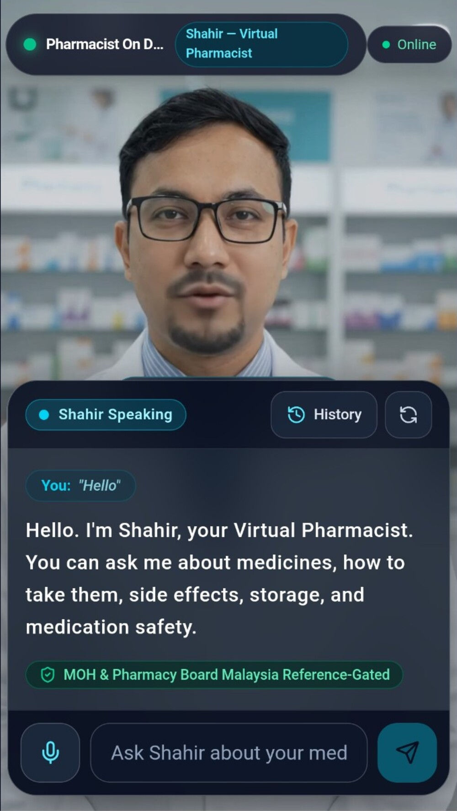

Your virtual pharmacy guide
Meet Awwab — the pharmacist on deck.
A calm place to discover what Pharmacy does, ask better medication questions, and see the quiet work that keeps patient care moving.
General pharmacy education
Live consultationVI · 2026

AwwabVirtual Pharmacy Guide
Can I ask about my medicines?
Yes. Start with a general question, then let a pharmacist help with the details that are personal to you.
What would you like to know about your medicine?→
Inside the experience